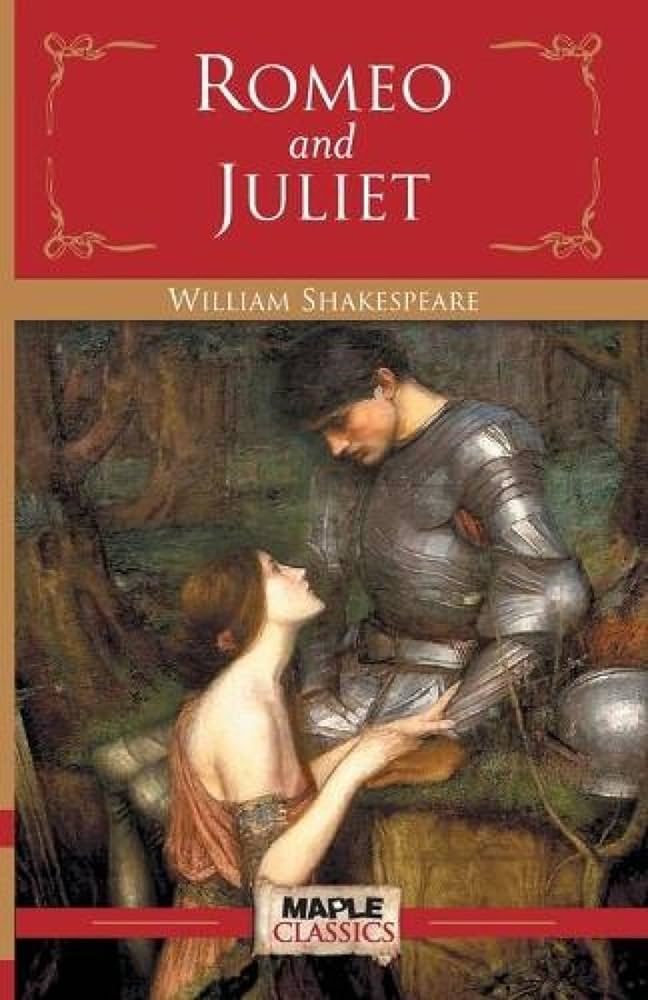
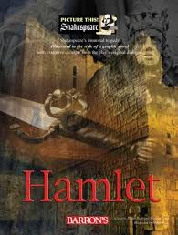

Merchant of Venice
Author: William Shakespeare
Description: The Merchant of Venice is a play by William Shakespeare, believed to have been written between 1596 and 1598.
A merchant in Venice named Antonio defaults on a large loan taken out on behalf of his dear friend, Bassanio, and provided by a Jewish moneylender, Shylock, with seemingly inevitable fatal consequences.
Characters
- Antonio - a prominent merchant of Venice in a melancholic mood
- Bassanio – Antonio's close friend; suitor to Portia; later the husband of Portia
- Gratiano – friend of Antonio and Bassanio; in love with Nerissa; later the husband of Nerissa
- Lorenzo – friend of Antonio and Bassanio; in love with Jessica; later the husband of Jessica
- Portia – a rich heiress; later the wife of Bassanio
- Nerissa – Portia's waiting maid – in love with Gratiano; later the wife of Gratiano; disguises herself as Portia's clerk
- Shylock – a miserly Jew; moneylender; father of Jessica
- Jessica – daughter of Shylock, later the wife of Lorenzo
Published: 1600 as a quarto.
Pages: 173
Romeo & Juliet

Author: William Shakespeare
Description: Romeo and Juliet is a tragedy written by William Shakespeare early in his career about the romance between two Italian youths from feuding families. It was among Shakespeare's most popular plays during his lifetime and, along with Hamlet, is one of his most frequently performed. Today, the title characters are regarded as archetypal young lovers.
Characters
- Prince Escalus is the ruling Prince of Verona.
- Count Paris is a kinsman of Escalus who wishes to marry Juliet.
- Mercutio is another kinsman of Escalus, a friend of Romeo.
- Capulet is the patriarch of the house of Capulet.
- Lady Capulet is the matriarch of the house of Capulet
- Juliet Capulet, the 13-year-old daughter of Capulet, is the play's female protagonist.
- Tybalt is a cousin of Juliet, the nephew of Lady Capulet.
- Rosaline is Lord Capulet's niece, Romeo's love in the beginning of the story.
Published: 1597 as a quarto.
Pages: 480
Hamlet

Author: William Shakespeare
Description:This article is about the play by William Shakespeare. For its protagonist, see Prince Hamlet. For the type of settlement, see Hamlet (place). For other uses, see Hamlet
Characters
- Hamlet – son of the late king and nephew of the present king, Claudius
- Claudius – King of Denmark, Hamlet's uncle and brother to the former king
- Gertrude – Queen of Denmark and Hamlet's mother
- Polonius – chief counsellor to the king
- Ophelia – Polonius's daughter
- Horatio – friend of Hamlet
- Laertes – Polonius's son
Published: 1603
Pages: 330